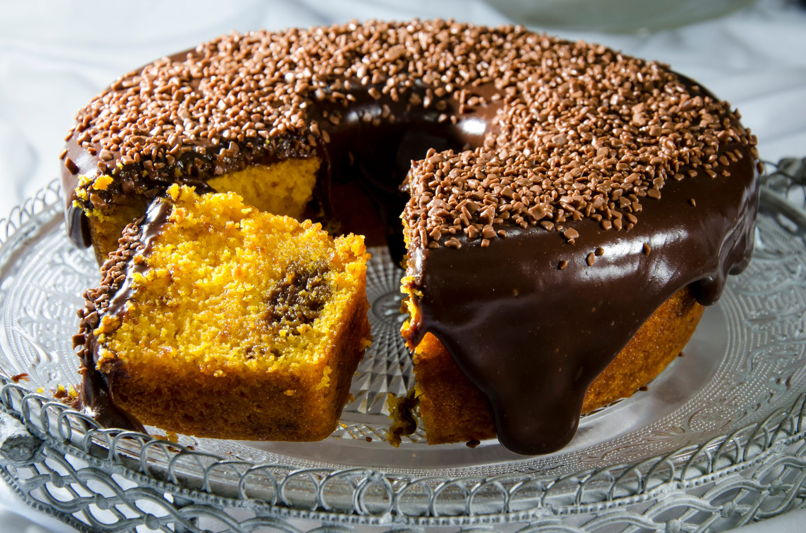

Bolo de Chocolate

Aqui está uma receitaácil e deliciosa de bolo simples e fofinho que você pode preparar em casa!
Ingredientes:
- 3 ovos
- 1 xícara de açúcar
- 1/2 xícara de margarina ou manteiga
- 1 xícara de leite
- 2 xícaras de farinha de trigo
- 1 colher de sopa de fermento em pó
- 1 pitada de sal
Modo de Preparo:
- Em uma tigela, bata os ovos, o açúcar e a manteiga.
- Adicione o leite e a farinha de trigo e bata novamente.
- Despeje a mistura em uma tigela e adicione o fermento e o sal.
- Mexa delicadamente para incorporar o fermento.
- Despeje a massa em uma forma untada e enfarinhada.
- Asse em forno pré-aquecido a 180°C por cerca de 30-35 minutos ou até que um palito inserido no centro do bolo saia limpo.
Assista ao vídeo da receita